ReactiveCocoa和MVVM简介
本文主要翻译自原文, 不过省去了大段啰嗦，并且也加入了其他的一些观点。
MVC模式有一个非常让人头疼的问题就是controller往往过于庞大。MVVM是解决的方法之一。
MVVM的三个结论
MVVM可以兼容当下使用的MVCMVVM可以增加应用的可测试新MVVM配合绑定机制效果最好
什么是MVVM
与其专注于说明 MVVM 的来历，不如让我们看一个典型的 iOS 是如何构建的，并从那里了解 MVVM：

我们看到的是一个典型的 MVC 设置。Model 呈现数据，View 呈现用户界面，而 View Controller 调节它两者之间的交互。Cool！
稍微考虑一下，虽然 View 和 View Controller 是技术上不同的组件，但它们几乎总是手牵手在一起，成对的。你什么时候看到一个 View 能够与不同 View Controller 配对？或者反过来？所以，为什么不正规化它们的连接呢？
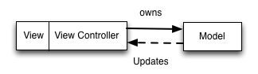
这更准确地描述了你可能已经编写的 MVC 代码。但它并没有做太多事情来解决 iOS 应用中日益增长的重量级 View Controller 的问题。在典型的 MVC 应用里，许多逻辑被放在 View Controller 里。它们中的一些确实属于 View Controller，但更多的是所谓的“表示逻辑（presentation logic）”，以 MVVM 属术语来说，就是那些将 Model 数据转换为 View 可以呈现的东西的事情，例如将一个 NSDate 转换为一个格式化过的 NSString。
我们的图解里缺少某些东西，那些使我们可以把所有表示逻辑放进去的东西。我们将其称为 “View Model” —— 它位于 View/Controller 与 Model 之间：

看起好多了！这个图解准确地描述了什么是 MVVM：一个 MVC 的增强版，我们正式连接了 View 和 Controller ，并将表示逻辑从 Controller 移出放到一个新的对象里，即 View Model。MVVM 听起来很复杂，但它本质上就是一个精心优化的 MVC 架构，而 MVC 你早已熟悉。
下图显示了整个变化的过程
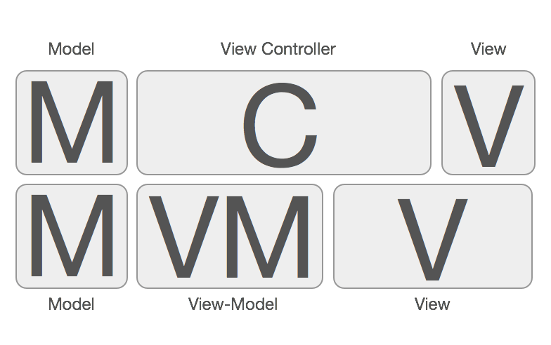
现在 View Controller 仅关注于用 view-model 的数据配置和管理各种各样的 View , 并在先关用户输入时让 view-model 获知并需要向上游修改数据. View Controller 不需要了解关于网络服务调用, Core Data, 模型对象等.
view-model 会在 View Controller 上以一个属性的方式存在. View Controller 知道 view-model 和它的公有属性, 但是 view-model 对 View Controller 一无所知. 你该对这个设计感觉好多了因为我们的关注点在这儿进行更好地分离.
为了更好的理解如何把这些组件组装在一起，以及每个组件对应职责，我们可以看看新的应用架构的模块层级图.
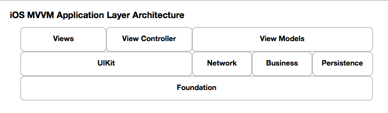
ViewModel 和 ViewController 在一起，但独立
我们来看个简单的 view-model 头文件，这样可以对我们的新组件 ViewModel 有一个直观印象。我们举一个简单的例子, 假设我们在制作一个推特的客户端，通过在输入框里，输入他们的姓名并点击 “Go”，它可以用来查看任何推特用户的最新回复。
我们的例子的界面将会是这样:
- 有一个让用户输入他们姓名的 UITextField , 和一个写着 “Go” 的 UIButton
- 有显示被查看的当前用户头像和姓名的 UIImageView 和 UILabel 各一个
- 下面放着一个显示最新回复推文的 UITableView
- 允许无限滚动
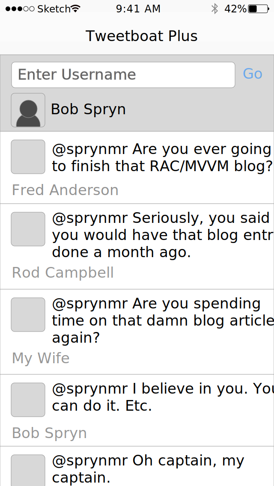
ViewModel的例子
注意到这些 readonly 属性了么?这个 view-model 暴漏了 View Controller 所必需的最小量信息, View Controller 实际上并不在乎 view-model 是如何获得这些信息的. 现在我们两者都不在乎. 仅仅假定你习惯于标准的网络服务请求, 校验, 数据操作和存储.
view-model 没有做的事儿
- 对 View Controller 直接操作或直接通告其变化
View Controller
View Controller 从 view-model 获取的数据将用来:
- 当 usernameValid 的值发生变化时改变 “Go” 按钮的 enabled 属性
- 当 usernameValid 等于 NO 时调整按钮的 alpha 值为0.5(等于 YES 时设为1.0)
- 更新 UILable 的 text 属性为字符串 userFullName 的值
- 更新 UIImageView 的 image 属性为 userAvatarImage 的值
- 用 tweets 数组中的对象设置tableview 中的 cell
- 当滑到tableview底部时如果 allTweetsLoaded 为 NO, 提供一个 显示 “loading” 的 cell
View Controller 将对 view-model 做如下操作:
- 每当 UITextField 中的文本发生变化, 更新 view-model 上仅有的 readwrite 属性 username
- 当 “Go” 按钮被按下时调用 view-model 上的 getTweetsForCurrentUsername 方法
- 当滚动到 “loading” cell 时调用 view-model 上的 loadMoreTweets 方法
View Controller 不做的事儿:
- 发起网络服务调用
- 管理 tweets 数组
- 判定 username 内容是否有效
- 将用户的姓和名格式化为全名
- 下载用户头像并转成 UIImage
请再次注意 View Controller 总的责任是处理 view-model 中的变化
子 View-Model
view-model 不必包括在屏幕上显示所有东西. 可用子 view-model 来代表屏幕上更小, 并且有必要封装的部分. 比如tableview 的 cell 在 app 中可以被重用, 那么子 view-model 就会格外有利.
在我们的例子中, tweets 数组将会包含下面这样的子 view-model :
View-Model 从哪来?
view-model 是何时何处被创建的呢? 是 View Controller 创建它们自己的 view-model 么?
View-Model 产生 View-Model
严格来说, 你应该为 app delegate 中的顶级视图控制器创建一个 view-model. 当展示一个新的视图控制器时, 或很小的视图被 view-model 表现时, 你应要求当前的 view-model 为你创建一个子 view-model.
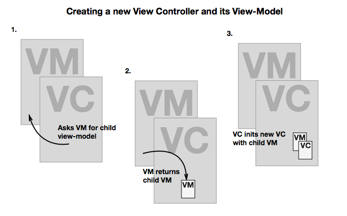
比如说，我们想要在用户点击应用顶部的头像时添加一个个人资料的 View Controller . 我们可以为一级的 view-model 添加类似如下方法:
- (MYTwitterUserProfileViewModel *) viewModelForCurrentUser;
向下面这样使用
这个例子中当我们展现当前用户的资料 VC 时, 这个新的 VC 需要一个 view-model. 而当前的 VC 不知道(也不该知道)用于创建相关用户 view-model 的全部数据, 所以它请求它自己的 view-model 来创建新的 view-model .
View-Model 列表
至于 tableview 的 cell, 当获得到新的数据时(或许是通过网络), 我们会一次性的为对应的所有 cell 创建所有的 view-model. 所以, tweets 是一个 MYTweetCellViewModel 对象数组. 在 tableview 的 cellForRowAtIndexPath 方法中, 我们会取得正确的 view-model, 并把它赋值给对应的 cell 上的 view-model 属性.
可测试
函数式编程的好处之一就是每一个函数是没有状态的，同样的输入对应的同样的输出。因此也是极度好测试的。
事实上，我们也可以使 view-model 尽可能的达到无状态的程度。其实这也比较符合 view-model 的本意，view-model 被设计用来把数据模型转变成 view 显示需要的属性。理想上相同的输入(比如网络服务响应)将会导出相同的输出(属性的值).
所以好的 view-model 可以是非常容易进行单元测试的.
绑定
当初始化 VC 的时候，我们往往可以根据 view-model 的属性来显示 View，但是当 view-model 的属性发生变化时我们如何更新我们的 View 呢?
可以的选择大概有这些：
- 将 VC 暴露给 view-model, 以便于当相关数据变化或类似事件发送时它可以调用一个 “updateUI” 方法. (完全破坏了封装)
- 在 view-model 里将 VC 作为一个委托, 当 view-model 内容有变化时发个通知 (好一些，一半封装，如果有大量的独立变化的属性感觉就要抓狂了)
- KVO （挺好，不过api过度设计，很难用，不支持block）
- ReactiveCocoa (api很好用，并且可以用响应式编程的方式来思考)
ReactiveCocoa 和 delegate, notification 等的区别是什么？
拿一个输入用户名和密码的例子来说, 当输入合法时, 我们需要更新提交按钮的状态. 按通常的编程范式，很可能会照下面这么做:
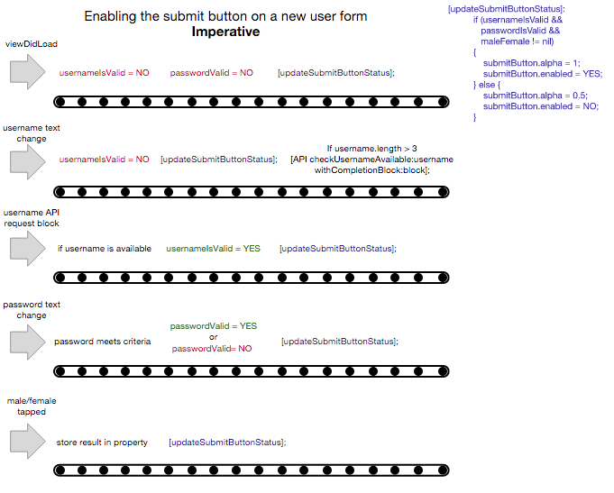
我们可以看到，每一条简单的逻辑里都分布了许多零碎的需要考虑状态的代码。尽管封装了 updateSubmitButtonStatus 这样的函数，但是这个函数里面判断状态的代码由于要考虑使用的上下文关系，也复杂得让可读性基本上降为了0。有经验的人知道维护这样的代码有多头疼。注意，这还只是一个 UI 元素中的一条逻辑线。。。。。。
来看一下下面这个版本
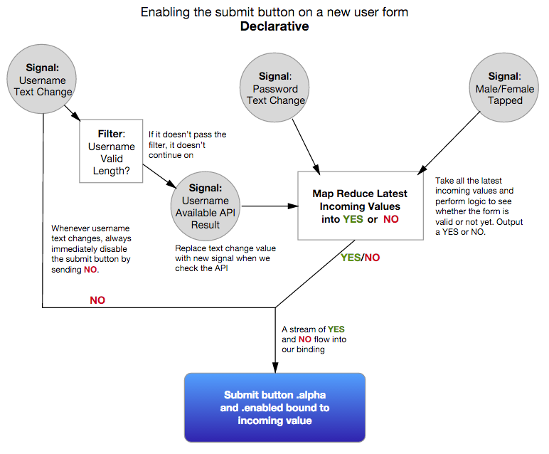
这看起来可能像是为我们流程文档中的一张旧式的插图. 但是通过这样声明, 我们事实上使用了更高层次的抽象, 这让我们在实际编程可以更接近我们在脑海中流程的设计方式. 这种方式下，计算机为我们做更多工作. 而实际的代码也更加像这幅图了.
RACSignal
RACSignal 是 RAC 的构造单元. 它代表最终将要收到的信息. 当你能将未来某时刻收到的消息具体表示出来时, 你就可以开始运用逻辑构建信息流(声明式), 而不是必须等到事件发生(驱动式).
RACSignal控制这些信息流使用了下面所有的这些异步方法(delegates, callback blocks, notifications, KVO, target/action event observers 等)，并将它们统一到一个好用的接口下. 这只是简单直观解释. 其实它提供的功能不仅是这些, 因为它还提供给你轻松转换/分解/合并/过滤信号的能力.
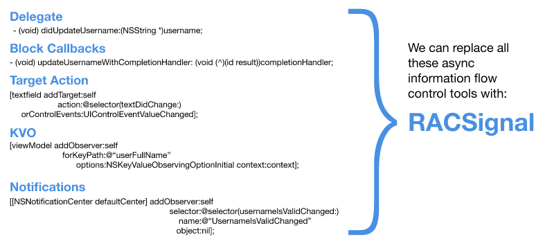
那么什么是Signal
这是一个信号:
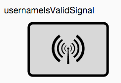
Signal 是一个发送一连串值(Event)的 object . 但目前这个 Signal 啥也不干, 因为它还没有 Subscriber. Signal 只有在有 Subscriber 监听时，Signal 才会发信息. 它将会向 Subscriber 发送0或多个载有数值的next事件, 后面跟着一个complete事件或一个error事件.
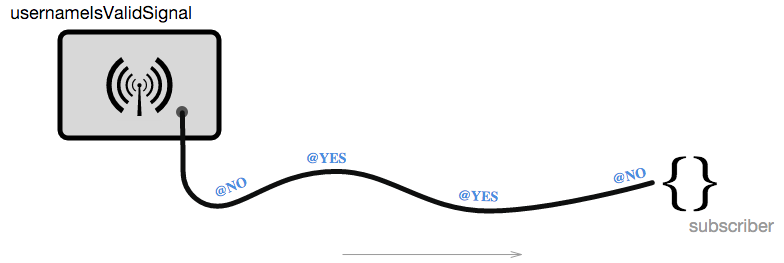
正如之前提到的, 如果觉得需要的话, 你可以过滤, 转换, 分解和合并那些值. 不同的订阅者可能需要使用Signal通过不同方式发送的值.
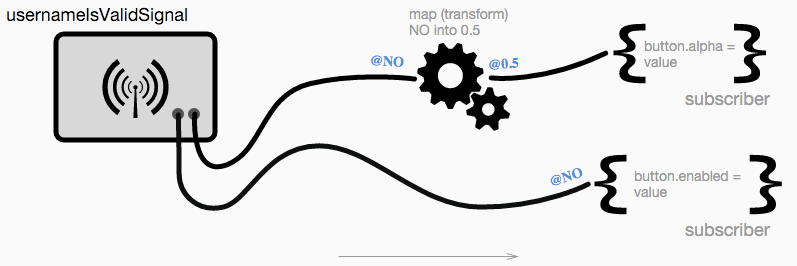
从哪获得信号发送的值?
信号异步的等待某事发生, 然后把结果值发送给它们的订阅者. 你可以用 RACSignal 的类方法 createSignal: 手动创建信号:
这里使用了一个网络操作来创建了一个 Signal . 这个网络操作成功以后，它会给 subscriber 发送sendNext: 和 sendCompleted: 事件. 如果失败， 会触发一个 sendError: 事件。 现在就可以 subscribe 这个 signal 了。
事实上这样创建的Signal并不常见，RAC 提供了很多机制, 来从我们常用的异步模式中拉取信号. 即使有一些异步模式 RAC 没有直接提供，也可以用createSignal:很容易的创建
RAC 其中提供的一个机制就是 RACObserve() 宏. 这个宏是 RAC 中对 KVO 中那些悲惨的 API 的替代. 你只需要传入对象和你想观察的那个对象某属性的 keypath. 给出这些参数后, RACObserve 会创建一个信号, 一旦它有了 subscriber , 它就立刻发送那个属性的当前值, 这个属性在这之后的任何变化也会被发送.
RACSignal *usernameValidSignal = RACObserve(self.viewModel, usernameIsValid);

这仅是提供用于创建信号工具的其中一个. 下面有几个立即可用的方式, 来从内置控制流机制中产生信号:
你也能很容易的创建自己的信号, 包括替代那些没有 RAC 支持的其他委托. 我们现在能够从所有这些不连贯的异步/控制流工具中拉取出信号并将他们合并, 试想想这些会成为我们之前看到的声明式图表中的节点. Nice！！！
什么是 subscriber ?
简言之, subscriber 就是一段代码, 它等待信号给它发送一些值, 然后订阅者就能处理这些值了. (它也可以作用于 “complete” 和 “error” 事件. )
来看一个简单的 subscriber , 它是通过向 signal 的方法 subscribeNext 传入一个 block 来创建的. 这里通过 RACObserve() 宏创建信号来观察一个对象上属性的值, 并把它赋值给一个内部属性.
BTW：RAC 只处理对象, 而不处理像 BOOL 这样的基本类型值. 不过不用担心, RAC 通常会帮你做转换.
上面的代码看起来有点冗余。 RAC 也意识到这种赋值绑定的普遍, 所以它提供了另一个宏 RAC(). 与 RACObserve() 相同, 你提供想要与即将到来的值绑定的对象和参数, 它内部就会像上面代码一样，创建一个订阅者并更新绑定的属性的值. 这个例子现在看起来像这样:
- (void) viewDidLoad {
//...
RAC(self, usernameIsValid) = RACObserve(self.viewModel, isUsernameValid);
}
考虑下我们的目标, 这么干其实有点傻啊. 我们不需要将信号发送的值存到属性中(这会创建状态), 我们真正要做的是用从那个值获取到信息来更新 UI .
转换数据流
现在我们使用 RAC 提供的用于转换数值流的方法. 我们将会利用 RACSignal 的实例方法 map.
这样现在我们将 view-model 上的 isUsernameValid 发生的变化直接绑定到 goButton 的 enabled 属性上. 酷吧? 对 alpha 的绑定更酷, 因为我们正在使用 map 方法将值转换成与 alpha 属性相关的值. (注意在这里我们返回的是一个 NSNumber 对象而不是原始float值. 这基本上是唯一的污点: 你需要负责为 RAC 将原始值转化为对象, 因为它不能帮你导出来.)
多个订阅者, 副作用, 代价
这里需要指出的是，当信号需要发送一个新的值时, 它会遍历所有的订阅者并给每个订阅者发送那个值. 对我们而言，信号发出的值不存储在任何地方(除了 RAC 在内部实现中). 也就是说每当一个新值通过信号链被发送出去时, 实际上会给每个订阅者都发送一次.
这意味着信号链某处存在的任何副作用, 任何影响 App 状态的转变, 将会发生多次. 这对新接触 RAC 的用户来说往往是意想不到的. (这也违反了函数式编程的理念-单纯的数据输入, 数据输出).
一个做作的例子可能是: 信号链某处的信号在每次按钮被按下时更新 self 中的一个计数器属性. 如果信号链有多个订阅者, 计数器的增长将会比你想的还要多. 你需要努力从信号链中尽可能剔除副作用. 当副作用不可避免时, 你可以使用一些恰当的预防机制. 就不再这里多说了。
除副作用之外, 还需要注意带有昂贵操作和可变数据的信号链. 网络请求就是一个三者兼得的例子:
- 网络请求影响了应用的网络层(副作用).
- 网络请求为信号链引入了可变数据. (两个完全一样请求可能返回了不同的数据. )
- 网络请求反应慢啊.
例如, 你可能有个信号在每次按钮按下时发送一个值, 而你想将这个值转换成网络请求的结果. 如果有多个订阅者要这个处理信号链上返回的这个值, 你将发起多个网络请求.(有点诡异！)
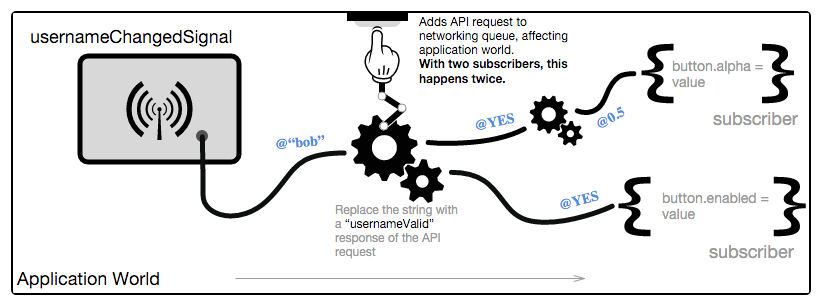
网络请求明显是经常需要的. 正如你所期望, RAC 提供这些情况的解决方案, 也就是 RACCommand 和多点广播. 我将会在下一篇文章中更深入地分析.
Reactivecocoa + MVVM
简短的介绍(嗯哼)有点扯远了, 现在我们看看如何用 ReactiveCocoa 将 view-model 与视图控制器连接起来.
让我们过一遍这个例子.
RAC(self.viewModel, username) = [myTextfield rac_textSignal];
在这我们用 RAC 库中的方法从 UITextField 拉取一个信号. 这行代码将 view-model 上的可读写属性 username 绑定到文本框上的用户输入的任何更新.
RACSignal *usernameIsValidSignal = RACObserve(self.viewModel, usernameValid);
RAC(self.goButton, alpha) = [usernameIsValidSignal
map: ^(NSNumber *valid) {
return valid. boolValue ? @1 : @0. 5;
}];
RAC(self.goButton, enabled) = usernameIsValidSignal;
在这我们用 RACObserve 方法在 view-model 的 usernameValid 属性上创建了一个信号 usernameIsValidSignal. 无论何时属性发生变化, 它将会沿着管道发送一个新的 YES 或 NO. 我们拿到那个值并将其绑定到 goButton 的两个属性上. 首先我们将 alpha 分别对应 YES 或 NO 更新到1或0. 5(记着在这必须返回 NSNumber). 然后我们直接将信号绑定到 enabled 属性, 因为 YES 和 NO 在这无需转换就能完美地运作.
RAC(self.avatarImageView, image) = RACObserve(self.viewModel, userAvatarImage);
RAC(self.userNameLabel, text) = RACObserve(self.viewModel, userFullName);
上面我们为 tableview 的 header 的 imageview 和用户标签创建绑定, 再次在 view-model 上对应的属性上用 RACObserve 宏创建信号.
@weakify(self);
[[[RACSignal merge:@[RACObserve(self.viewModel, tweets),
RACObserve(self.viewModel, allTweetsLoaded)]]
bufferWithTime:0 onScheduler:[RACScheduler mainThreadScheduler]]
subscribeNext:^(id value) {
@strongify(self);
[self.tableView reloadData];
}];
这货看上去有点诡异, 所以我们在这上多花点时间. 我们想在 view-model 上 tweets 数组或 allTweetsLoaded 属性发生变化时更新表格视图. (在这个例子中, 我们要用一个简单的方法来重新加载整张表. )所以我们将这两个属性被观察后创建的两个信号合并成一个更大的信号, 当两个属性中有一个发生变化, 这个信号就会发送值.
那么这儿看起来最吓人的部分可能是信号链中的 bufferWithTime: onScheduler: 方法. 这是因为需要它来围绕 UIKit 中的一个问题进行变通. tweets 和 allTweetsLoaded 这两个属性我们都需要追踪. 有时两个属性都将在同一时间发生变化, 意味着合并后的大信号中的两个信号都会发送一个值, 那么 reloadData 方法将会在同一个 run loop 中被调用两次. UIKit 不喜欢这样. bufferWithTime: 在给定的时间内接收所有发送来的值, 然后在给定的时间过后再将所有值合在一起发给订阅者. 通过传入0作为时间, bufferWithTime: 将会接受再一个run loop中发出的全部值, 然后再将他们一起发送出去. 暂时不用担心 scheduler, 试把它想做指明这些值必须在主线程上被发送. 现在我们确保 reloadData 每次运行循环只被调用一次.
注意我在这用 @weakify/@strongify, RAC 中引用 self 时一定要注意循环引用的问题
[[self.goButton rac_signalForControlEvents:UIControlEventTouchUpInside]
subscribeNext: ^(id value) {
@strongify(self);
[self.viewModel getTweetsForCurrentUsername];
}];
我将会在下一篇文章中在这里引入 RACCommand, 但目前我们只是当按钮被触碰时手动调用 view-model 的 getTweetsForCurrentUsername 方法.
我们已经搞定了 cellForRowAtIndexPath 的第一部分, 那么我在这将只说下 loading cell:
MYLoadingCell *cell =
[self.tableView dequeueReusableCellWithIdentifier:@"MYLoadingCell" forIndexPath:indexPath];
[self.tableView loadMoreTweets];
return cell;
这是另一块我们以后将利用到 RACCommand 的地方, 但目前我们只是调用 view-model 的 loadMoreTweets 方法. 我们这里只是信任如果 cell 显示或隐藏多次的话 view-model 会避免多次内部调用.
- (void) awakeFromNib {
[super awakeFromNib];
RAC(self.avatarImageView, image) = RACObserve(self, viewModel.userAvatarImage);
RAC(self.userNameLabel, text) = RACObserve(self, viewModel.tweetAuthorFullName);
RAC(self.tweetTextLabel, text) = RACObserve(self, viewModel.tweetContent);
}
我们正在将图片和文字绑定到 UI 上对应的属性, 这里我想指出一点. 注意 viewModel 出现在 RACObserve 宏中逗号右边. 这些 cell 终将被重用, viewModel 会被新的 view-model 赋值. 如果我们不将 viewModel 放在逗号右边, 那么每次改变新的viewModel的话，都要重新设置绑定; 如果放在逗号右边, RACObserve 将会为我们负责这些事儿. 因此我们只需要设定一次绑定并让 Reactive Cocoa 做剩余的部分. 这是在绑定 table cell 时为了性能需要记住的好东西. 我在实践中即使是有很多 table cell 依然没有出过问题.